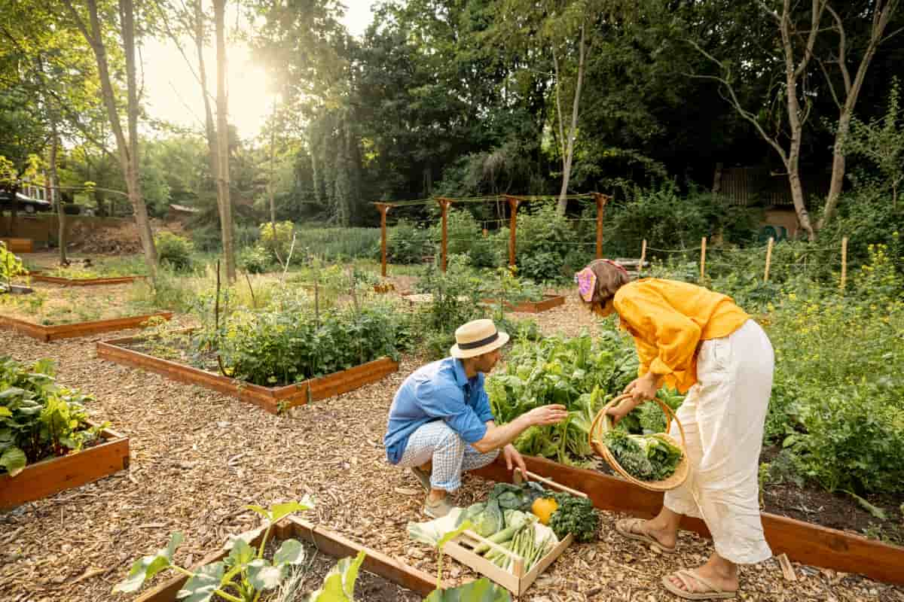
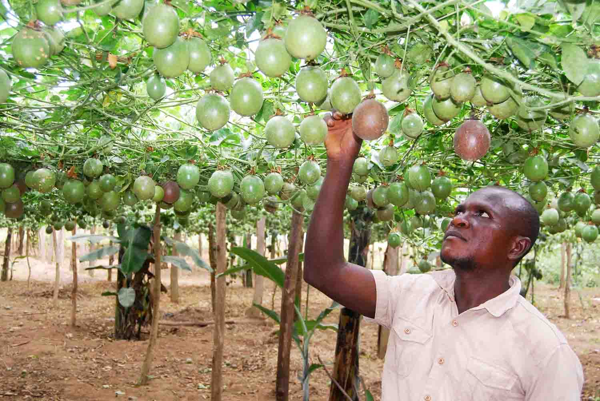
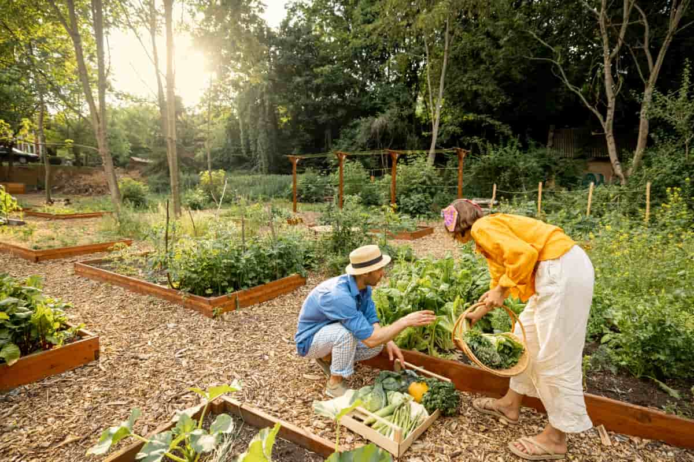
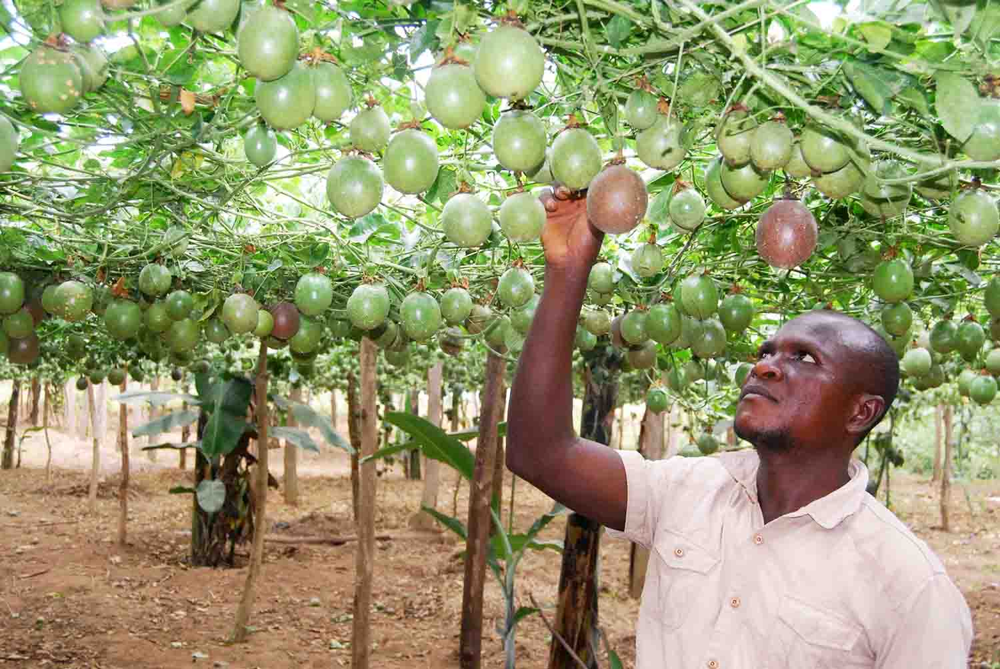

What is Gardening and Why is it Important?
Gardening involves growing and cultivating plants like vegetables, herbs, and flowers. It promotes self-sustainability, health, and community bonding while reducing environmental impact.
- Provides healthy, fresh food
- Supports small-scale businesses
- Encourages environmental stewardship
 



Common Gardening Challenges & Solutions
1. Pests and Diseases
Insects and animals damage plants and reduce yields.
- Use neem oil, garlic spray
- Inspect plants regularly
- Set up barriers or scarecrows
2. Soil Problems
Bad soil leads to poor plant growth.
- Improve soil with compost and organic matter
- Use raised beds or containers
3. Weather and Climate
Extreme weather affects productivity.
- Use mulch, covers, and collect rainwater
4. Time and Maintenance
Neglect causes poor growth.
- Create a regular care schedule
5. Water Management
Over or under watering harms plants.
- Install drip systems and check soil before watering
6. Space and Sunlight
Urban areas may lack enough light or room.
- Use mobile containers and grow compact plants
7. Cost
Initial and ongoing gardening costs can be high.
- Start small, use recycled materials
- Make your own compost and fertilizer
8. Human and Practical Challenges
Beginners often make mistakes.
- Start with easy plants like beans or mint
- Join local groups and learn online
Garden Tool Cost Calculator
Enter the quantity and price of each tool to calculate total startup cost:
Local Inspiration
- Mphoke Makwala: Built a broiler business and YouTube following.
- Vicky Mhlanga: Grows poultry despite limited resources.
- Asenathi Ngqobe: Young livestock farmer and student leader.
Tips for Beginners
- Use recycled containers for planting
- Buy seeds instead of mature plants
- Start small and expand over time